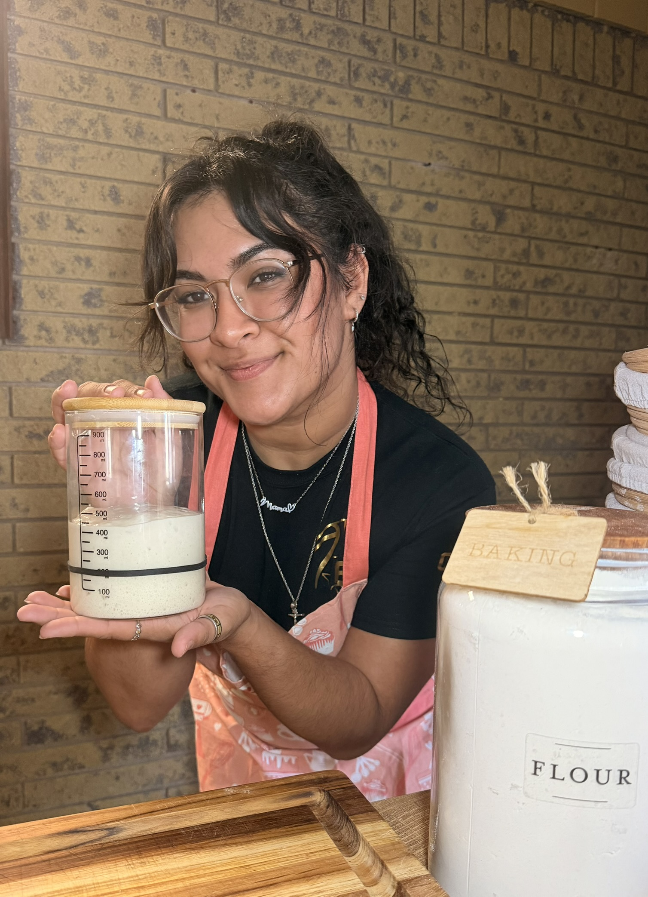
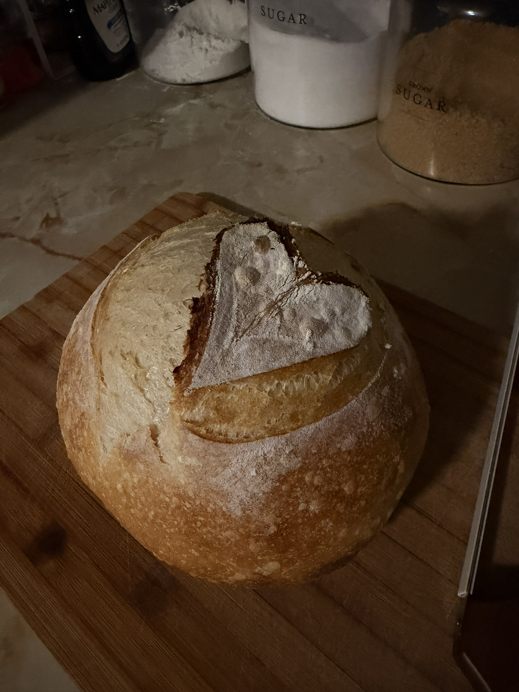
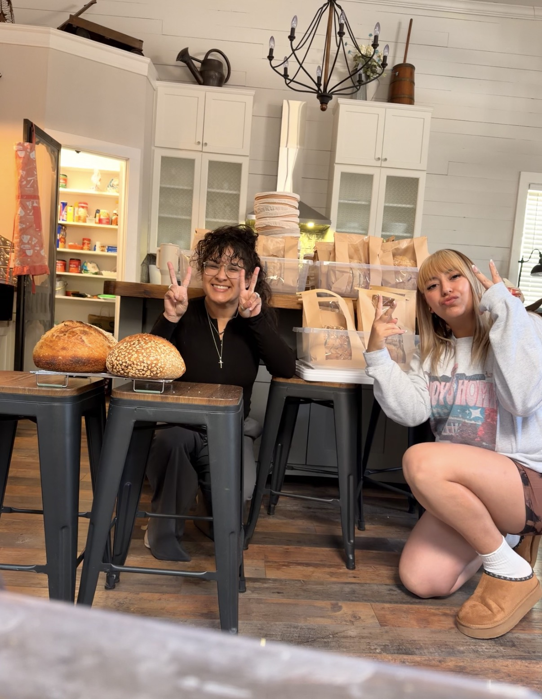
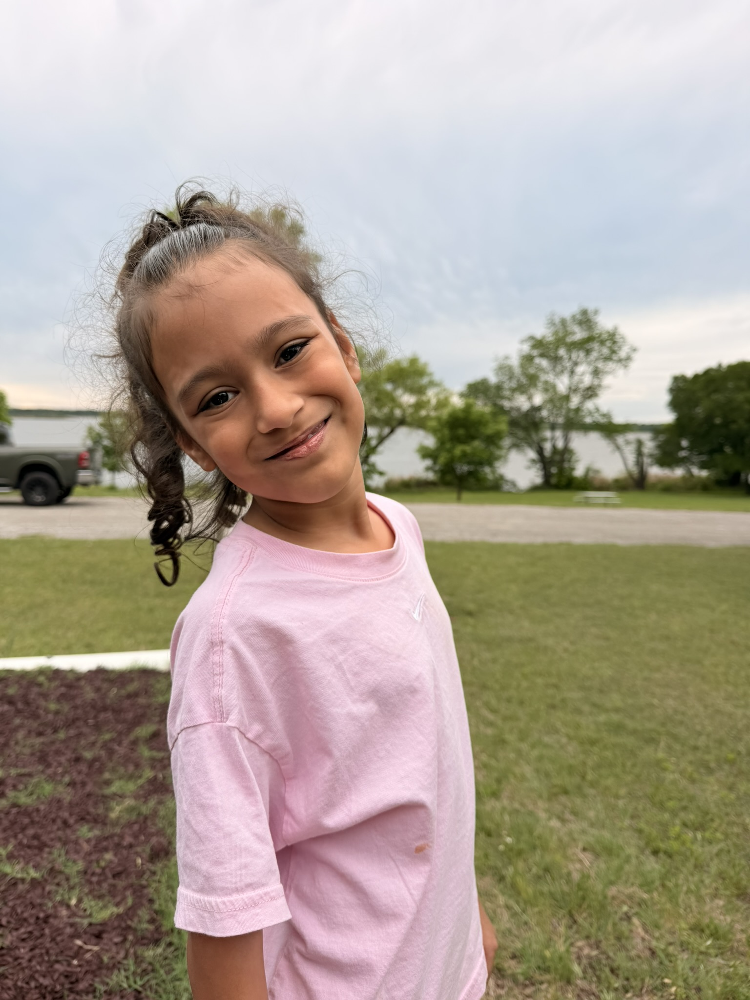

Our Story
From a little sourdough hobby to a little bakery dream come true! This is how Heavenly & Crumb came to be.

Hello! I'm Amber ♡
I'm so happy you're here! My name is Amber and I'm the baker, founder, owner, creative director, and everything in between behind Heavenly & Crumb. ♡
What started as me learning to make sourdough at home quickly became something I couldn’t stop creating, sharing, and dreaming about. I've put a lot of love into every aspect of Heavenly & Crumb and although we're just at the beginning, I'm already extremely proud of where we are and excited to see where we go next!

Just a girl, some flour, water, and a dream.
Our story began in October 2025 with just a girl, some flour, water, and a dream. Before I even made my first edible loaf, I imagined myself running a cute little bakery.
By February 2026, I was confidently making something I was genuinely proud of and decided to share my work at a Galentine’s party, where I was asked the question that changed the direction of this little hobby:
“Do you sell this?”
At the time, the answer was no. But that loaf would lead to my first-ever order: a wedding!
Suddenly, baking for other people didn’t feel like such a faraway idea.

There was a wedding order.
Before there were labels, menus, product names, or even a used social media page, there was a wedding order.
OUR FIRST ORDER!
I was still a brand-new sourdough baker, but someone trusted me to put my bread on one of the biggest tables of their life.
I said yes, and Heavenly & Crumb started becoming a little more real. I recruited my best friend to help me attack this very large (and very intimidating!) order, and together we completed Heavenly & Crumb's very first request!

Why Heavenly & Crumb? ♡
At the heart of the name Heavenly & Crumb is someone very special: Heavenly.
This little bakery carries her name — and this part of our story deserves a chapter of its own.
Heavenly Grace is my oldest daughter and the heart behind Heavenly & Crumb. ♡
Heavenly entered the world much earlier than expected in 2018, born at just 23 weeks and 4 days. At only 1 pound 3 ounces, she spent the beginning of her life fighting through a long NICU journey.
Today, she’s the bright, funny, incredibly smart little girl you see here; and one of the biggest reasons I’ve learned to believe that something small can grow into something extraordinary.
When it came time to give this little bakery a name, I wanted it to mean something. Heavenly & Crumb felt like us: a little playful, a little sweet, and rooted in someone who has inspired me from the very beginning.
Every loaf, every cookie, every late-night bake, and every little dream I have for this business gets to carry a piece of her name with it. ♡
From our kitchen to your table. ♡
Today, Heavenly & Crumb is a small-batch cottage bakery in Brackettville, Texas, creating artisan sourdough and simply sweet treats with a whole lot of love behind them.
What started with flour, water, and a little bakery dream has grown into named loaves, late-night bakes, first-time customers, returning customers, and a business I’m incredibly proud to call ours.
We’re still at the very beginning of the Heavenly & Crumb story. I don’t know exactly how big this little bakery will grow, but I do know I’ll keep baking, creating, learning, and dreaming about what comes next.
Thank you for being here while we build it. ♡
PREORDER YOUR BAKES